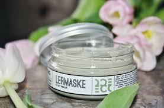

Clay mask:
Lermaske er en opfriskende maske, der er skabt med det formål at rense og opfriske din hud
samtidig med, at den minimerer dine porer og reducerer ujævnheder og uren hud. Det er en
kombination af Iris-ekstrakt, zinksalt og A-vitamin, som tilsammen skaber effekten i
Ecookings Lermaske. De aktive ingredienser virker både behandlende og forebyggende.
Masken indeholder et aktiv af Pseudomonas Altermonas, som er udvundet af mudder fra
Antarktis. Det reducerer mængden af sebumproduktionen i talgkirtlerne, der gør, at huden
bliver fedtet og skinnende. Masken modvirker nænsomt irritation og dulmer rødme, så din hud
føles rar og beroliget.
Indeholder derudover ingredienser, der øger regenerationen af cellerne i huden f.eks.
A-vitamin.
Vegan & dermatologisk testet.
ECOOKING:
Vores vision er at skabe produkter der virker og som indeholder så meget
naturlighed og økologi som muligt – med omtanke for dig og vores miljø, og til
priser hvor de fleste kan være med.
Dansk udviklet af en erfaren dansk producent og ildsjæl, der oprindeligt
håndfyldte produkterne på egen lille fabrik.
For alle – uanset hudtype og alder. Vi har produkter til enhver hudtype og
alders udfordringer, om det gælder linjer, rynker, acne eller rødmen. Vores
filosofi er, at alle fortjener den lækre følelse af velvære, som gode og nærende
hudplejeprodukter giver.
Til dig, der vil have sund og smuk hud uden for meget nonsens. Vores produkter
er, hvad de hedder og giver sig ud for at være. De er lette at gennemskue, nemme
at bruge og så effektive, at du kan slippe bekymringerne om din hud og i stedet
nyde alt det skønne, livet byder på.